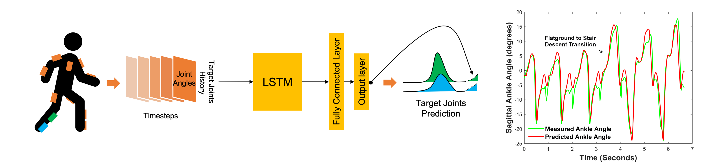

Coordinated Movement Control of Prosthetic limbs
Traditionally prosthetic controllers are designed by explicitly segmenting the human gait into activities like flatground walking, stair ascent etc., and phases like stance and swing. Then, pre-defined kinematics or impedance trajectories for each segment are executed on the prosthetic leg to enable the amputee to walk. However, using predefined trajectories presents a challenge to capturing the true complexity of human gait.
Coordinated movement control is a data-driven approach to this problem. It uses predictions of missing limb trajectories from intact limb motion, using machine learning models trained on real world motion capture data. These predictions can then be used as reference trajectories for the prosthetic limb.